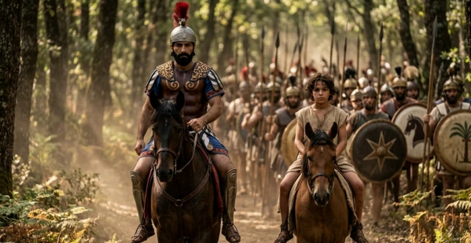

PROJECT 08 / 역사 · 영상 제작
생성형 AI로 제작한 포에니 전쟁 단편 영화
- 참여 학과
- 아트&테크놀로지
장면의 성격에 따라 이미지·영상·음성 모델을 조합해 역사 영화의 주요 장면을 제작했습니다.
01 문제 상황
고대 전쟁을 영상으로 재현하려면 인물, 의상, 병력, 배경을 일관되게 구성해야 하며 실사 촬영에는 큰 비용이 듭니다. 제2차 포에니 전쟁을 소재로 생성형 AI를 활용한 역사 단편 영화 제작 가능성을 탐구했습니다.
02 사용 모델과 데이터
모델·기술
- Nano Banana 2·Pro: 역사적 장면의 기준 이미지를 제작합니다.
- Kling과 Seedance: 행군·전투 등 장면 특성에 따라 영상 생성 도구를 선택했습니다. Sora는 음성 제작 과정에 활용했습니다.
데이터·입력
- 제2차 포에니 전쟁의 주요 사건을 바탕으로 구성한 시나리오와 장면별 프롬프트.
- 앞서 생성한 인물·의상·배경 이미지를 후속 장면의 시각적 참고 자료로 사용했습니다.
03 구현 과정
- 역사적 사건을 주요 장면으로 나누고 인물과 배경의 시각적 기준을 정합니다.
- 기준 이미지를 반복 참조하면서 장면 이미지를 생성하고, 움직임 특성에 맞는 도구로 영상화합니다.
- 대사·음성과 장면을 결합해 편집하고 인물 및 장면 간 연결을 점검합니다.
04 핵심 결과
- 보고서 작성 시점에 주요 장면 제작을 완료하고 영상 편집·후반 작업을 진행하고 있었습니다.
- 단순 이동과 복잡한 전투 장면에서 모델별 결과가 달라, 여러 모델을 목적에 맞게 조합하는 제작 방식을 도출했습니다.

05 한계와 발전 방향
- 인물 외형의 일관성, 부자연스러운 움직임, 음성과 화면의 연결을 반복 수정해야 했습니다.
- 완성 영상 공개는 보고서의 향후 계획에 해당합니다. 생성된 장면 자체가 역사적 사실의 검증 자료는 아닙니다.
자료: 최종보고서. 제출 자료를 바탕으로 정리했으며, 결과는 해당 프로젝트의 구현·실험 범위에 해당합니다.